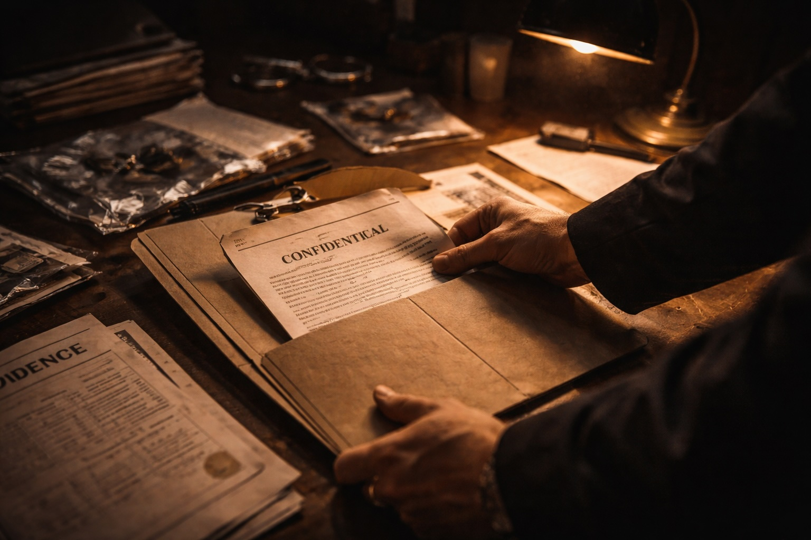

Jonathan Davies was charged with a multi-million pound drug conspiracy. He was cited as the head of a Manchester gang importing heroin on a large scale. This gang have been the subject of a number of linked SOCA operations, which included surveillance on foreign soil.
Jonathan had been extradited from Portugal where he fled as the police net was closing in around him. The CPS had already prosecuted other gang members who were serving lengthy custodial sentences. It was time for the main man to face the music.
Appearing in the dock with him would be his mother and girlfriend. They would face money laundering charges, being the spoils from the illicit trade in class A drugs. The Crown would be able to introduce the convictions of the other gang members before our jury. Hence the Crown did not need to establish a conspiracy, as the issue would simply be that Jonathan was a part of it. The heavy lifting had already been done, and the women were no more than bait to draw my client into a deal – whereby the women would be offered short or suspended sentences, if Davies uttered the word ‘guilty’ from the dock.
I had been parachuted in to R v Davies after he was told by mutual friends to sack his lawyers and instruct Mr G. The case was close to trial, so I was stuck with the work carried out by his existing lawyers – or lack of it. I dismissed the QC and junior, as I had no history with them. I replaced them with two juniors. Dominic D’Souza would lead from the front with Charles Langley as his junior. Langley was keen to learn and be involved in major trials, albeit he was less than thrilled at having one of the Fake Sheikh’s targets as his mentor.
R v Davies was fixed for a four week trial and, once I had read the boxes of case material, I learnt it was yet another prosecution dependent upon phone evidence. Masses of it, in fact. The outgoing firm had not questioned its integrity. My first task was to send a salvo to the CPS, seeking disclosure in order to establish the forensic history of the billing data.
Mobile data is touted as being unassailable. It is data obtained from the network providers’ computer systems without ‘human’ intervention. However, I was used to the dark arts underpinning mobile data and all is not as it seems on the surface.
The judiciary are well trained to stamp on any defence excursions into the integrity of mobile data. They view it as a time wasting exercise, calculated to remove the jury’s eyes from the drugs and into ‘mobile’ hallucinations, dreamt up by a defence team.
Police requests for mobile data are processed by their SPOC offices. These are set up in all police forces across the country and they alone are the single point of contact (SPOC) with the network providers. SPOC officers receive specialist training with regard to the obtaining and retention of telephone data. By centralising these request to O2/Vodafone etc, it halts confusion by developing a unified system to be rigidly adhered to.
SPOC officers can refuse requests made by investigating team if they are unfocused or disproportionate to the crimes under investigation. SPOC request forms must be completed, which need boxes ticking and a detailed account as to the nature of the case being pursued and how the production of billing data would advance the case to the charging stage. The SPOC form would specify what date was being sought – outgoing, incoming, cell sites or a combination of them.
SPLC officers, by the nature of their work, have close ties to the senior vetted staff within each of the network providers’ head offices. These are the folk who would process the SPOC request and supply the data being sought. It is a close, symbiotic relationship. I had flushed out, in an earlier high-profile case, that senior police officers attend seminars within the network providers’ offices to be updated as to how they could work better, and closer, together. Seen in this light, these multinational companies are no more than an arm of the State – to be watched and held to account by brave defence lawyers.
Data is only kept for one calendar year. Hence, for an offence committed on 1/1/19, no mobile data would exist if it was sought on or after 2/1/20. It is deleted in accordance with the Data Protection Act. Thus in conspiracy cases, SOCA use this to their advantage as, inevitably, by the prosecution stage this “’year’ retention period is long gone. In Jonathan’s case, long gone. In real terms, the defence are thwarted with regard to their own enquiries, and are fixed with the data supplied to CPS under the CPIA regime from the police. It is, from the outset, a stacked deck.
The CPS are overworked, underpaid and lacking vision beyond the blinkers imposed upon them by the senior investigating officers. Why should they delve into establishing what the police had actually applied for from the network provider? They are content to receive the data from the police, scheduled by the police and simply pass it on to the defence. The CPS are the police’s “post box” – a phrase recently deployed by Chris Harding in an abuse of process application. To pretend The CPS are discharging their statutory, independent function is a lie. They are the police’s “bitches” – my phrase, not Mr H’s!
What I had been discovering was a dirty secret. The mobile print out’s being supplied to the defence were mocked up from the police’s own computers. They had been re-configured, and were touted as the data obtained directly from the network provider’s computers. It was a sham. I am not suggesting the data in the vast majority of cases would have been filleted, but this carefully constructed deception was in place to hide dirty secrets if the need arose.
In R v Davies the need had arisen, and the haphazard state of the data caused my bellybutton to engage with dishonesty angles. In a major investigation, hinging on phone evidence, it should have been in pukka order. SOCA works on the assumption that defence teams (who are equally short of time, staff and patience) will raise no issues and proceed on the premise all is above board.
SOCA, in this way can, cut its cloth in-house and know full well, because of the one year deletion rule, no defence team could ever have the data reassembled. It is a home run. SOCA does not seek out material beneficial to the defence, but are solely focused on securing convictions. One senior judge, decades ago when dismissing a case against the notorious Liverpool gangster, Curtis Warren, cited because law-enforcement are steeped in matters of surveillance they see ‘drug dealers under every tree’.
In my first conversation with our junior counsel, Mr Langley, I mentioned SPOC. I noticed a glazed look in his eyes as he quizzed, ‘SPOC, Nick?’ No doubt he was conjuring up thoughts of addressing a judge about the Starship Enterprise and the presence of a human-vulcan in the drug supply chain. My junior had, if not an infinite, certainly a long journey to grasp the ins and outs of billing data.
D’Souza, however, having been on past cases which centred on mobile billing data was well versed in uncovering the deceptions deployed by the police. Material touted as being original was proven not to be. Dom was used to judges peering over the glasses to query the sanity of defence counsel’s intrusion into the hallowed turf of O2/Vodafone.
‘Mr D’Souza, what is your point?!’
Dom would not seek to deflect this question, but he would instead hold the judge’s hand and walk him through the baby steps of his concerns – through the smoke and mirrors. Oftentimes, intellectually, one needs to reverse-pivot a legal submission. Attacked from the angle of how simple it would be for there to be no warranted attack on the data. The network providers would have their employees sign and date each page of the billing data. He or she would exhibit it to a contemporaneous, signed witness statement attaching the SPOC request which triggered the production of the material. What is easier than this? It is no more than is demanded of any other exhibit to be permitted into the trial process. It is at this juncture, a trial judge becomes engaged with defence concerns.
The reason for this manipulation is rooted in the police’s wish to hide their many informants and undercover officers. Contact with them can be excised from the data, either by restricting the time periods of the data (allegedly) obtained or supplying to the defence only outgoing data.
In English law, the deployment of informants and undercover officers is lawful, but they must be monitored and be within the remit of the CPIA regime. I have no quibbles with this – it is a fact of life. Equally, however, is the fact that the police believe it is ‘they’ you are in charge. They know who are guilty, and they know what material needs be supplied to obtain convictions. Therefore, to hoodwink the CPS and, in turn, a trial judge is simply par for the course.
The sad reality is the keys to a fair trial process have been handed to the police. The police view oversight as a hindrance, an unwelcome intrusion. If their hands are caught in the cookie-jar, by material being flushed out which was never within the CPIA, they have their mates on the Bench to cry, to hapless defence counsel:
‘Well, you have it now – what is your point? Move on.’
You will read the horrors of undercover policing in the ‘Mr Green, Mr Green, Mr Green’ chapter ‘X’ ( note – this is in Vol 2 folder), where the presence of an undercover officer was erased from the CPIA. Only by sheer luck did the true position emerge, and halt innocent protesters being imprisoned. The CPS blamed the police, and the police blamed the CPS. Lo and behold, no one was held to account, let alone be placed in a dock and be prosecuted for an attempt to pervert the course of justice.
In R v Davies, I had by my side a young, able and honest telephone expert by the name of Ross Patel. He had recently set up his own office, offering services to the legal profession. He was keen to generate business. My interest in him was because he was not an ex-copper. Most phone experts in the country are ex-CID/SOCA officers, who remain closely tied to law enforcement. They know where the bodies are buried, but remain tight-lipped – given they receive substantial work from police forces to be called as experts on behalf of the prosecution in major gangland trials.
Ross was an innocent abroad, unskilled in the cesspit of law enforcement, and the targeting of him which would occur once his head appeared over the parapet. He had a naive view of the English legal system and believed (like I once did) it was the envy of the civilised world.
Ross was also a computer expert, which led beautifully into my desire to unpick the workings of the network providers’ computer systems. My two ‘Us’ in Maths ‘O’ level, and my hapless grasp on anything technical did not trouble him. He was happy to walk me through the process. It is often out of the mouths of babes that the truth emerges.
With this newfound knowledge, I was able to be more direct and incisive with my requests for disclosure from the reviewing lawyer within the CPS. Ross was assisting me in R v Fury (chapter ‘X’) where you will read SOCA ended up on the ropes in their attribution of Peter Fury as a “fixer” in a drugs conspiracy. He was also advising in the notorious prosecution of the ‘Gooch’ gang in Liverpool Crown Court. So dear old Ross was, in short order, dunked in the deep end of gangland crime.
It is worth tarrying awhile on the Gooch case, as it graphically exposed the insidious relationship between the State and the network providers.
This prosecution was incepted to bring down this Moss Side gang, which had brought murder and mayhem to Manchester City streets.
It was Greater Manchester Police‘s (GMP’s) biggest ever organised crime investigation, and involved the police compiling a high-tech jigsaw of 80,000 mobile calls and texts. The Press also had a field day, whipping up the hatred for the men in the dock.
With Patel in tow, I began to bury my grubby paws into the computer systems propping up the masses of exhibited phone data, which were to be draped before the jury. Experience dictates, when resistance and aggression replace the necessity for intellectual thought, you know your opponents are in difficulties - you are on the right path. I sensed the network providers were hiding a dirty secret.
With the trial fast approaching, I needed to hatchet my way out of this impasse. With seven gangsters in the dock, and eight weeks of court time set aside for the trial, there was no possibility of an adjournment. Not one other defence legal team, all with QCs in tow, sought to support a slap, let alone a right hook, upon the integrity of the network provider’s systems.
My incendiary courtroom device, on this occasion, was to bypass the CPS and to serve a Witness Summons directly upon the network provider - another first for Mr G. I was calling for production of the forensic history of the systems or, failing this, I required the computers to be ripped from their head office and brought to Liverpool Crown Court!
The fallout was explosive. A major London commercial firm landed on Merseyside to stamp out and extinguish the Blackpudlian’s foray into their multinational firm’s systems. With them came fees of £650 per hour – their might stemming from financial clout. The hardly-veiled threat being the cost being ratcheted up would be met by my employers – it could hardly be my Gooch members who could foot the bill, unless payment in kind was acceptable...
The mayhem wrought by the Gooch gang was now replicated by those prosecuting, who took up arms alongside the network provider’s lawyers. “Green” was at it again. And ‘who’ was this “Ross Patel”, lending weight to the defence intrusions into “sensitive” areas?
Along with this heightened atmosphere, came the tension from press coverage and the presence of armed police patrolling the Crown building on each court appearance.
My learned QC was uninterested in my enquiries and landed little support to my less than covert entry into the network provider’s nether regions. The Witness Summons had, purposely, bypassed my QC, who was shocked to learn of the fallout once the suited and booted London outfit landed in Liverpool. The reality was that my QC did not want the label of being the one who halted GMP‘s biggest ever organised-crime prosecution. After the inevitable convictions, these men would receive sentences totalling 200 years. GMP would commission massive billboards, on the main arteries into Manchester, publicising the Gooch gang’s downfall. Pictures of the men were digitally altered to display their faces as old men – the images of the men who would be released, decades later, back into the community. The sentencing judge, Justice Longstaff, summed up with references to Al Capone in Chicago
Mr G stood his ground and, through this heated, hostile environment, a staggering truth slowly emerged. As with CPS’ disclosure, once material starts to be disclosed this opens up targeted request for more items. You just must not blink. Justice Longstaff displayed no interest in the enquiries being made by ‘one’ defence team. The mantra of “fishing expedition” was joined by the cry the defence were trying to “derail” the trial date.
Then, the dirty truth emerged. The network provider could not guarantee the data being paraded before the jury was complete! On a daily basis, once their systems were nearing capacity, calls would be automatically deleted. These random acts of culling permitted room for new data to be stored. Wow!
The Crown’s position was dire, as the big city lawyers had to go on and confirm, once calls were deleted, that they could never be recovered. Far from the data being unassailable, it was flawed. The charts plotting my client’s movements, from cell sites hit, around the time of extreme violence being dished out, would likely be partial and, hence, misleading. If calls were removed, in a 15 to 30 minute timeframe, one would end up with a skewed account of an individual‘s movements. Cell siting itself is acknowledged to not be an exact science. This, particularly, being the case where the men in the dock were not away from their domestic turf. All the charts plotted movements in South Manchester – or “Gunchester” as the press had nicknamed the city.
In America, Patel and I would have been lauded for uncovering this deception by a multinational company, at the beck and call of SOCA. In Liverpool, we were touted as paid-up members of the Gooch gang, giving succour to their activities.
The members of the Bar closed ranks and a plan was hatched. My QC informed me that the Crown were willing to sign up to her an “agreed fact”, which would be placed before the jury. This “fact” being the deletion of calls, and the inability to rectify the position because of the randomness of the lost calls. I stared into the eyes of my learned QC and growled at him, ‘Bollocks – that ‘agreed fact’ amounts to an admission that the evidence is irreparably flawed!’ Our junior counsel, Dominic Bell, (who was meant to be a friend of mine) simply hid behind the QC. He remained schtum. The Bar hunt in packs.
I eventually persuaded counsel to lodge an application calling for the withdrawal of the phone evidence from the case. The reality is, when a QC is dragged against his will to submit a brave and bold application, it ends up being flaccid. His submission was over, and failed, in a matter of minutes. No other defence counsel uttered a word in support of it. There was a gang in the dock, and the gang in the belly of the courtroom. I will permit the reader to imagine the fall out if Arran Coghlan had faced this situation! My Gooch member was out of his depth, and in love with the posh, calming and supportive tones of his counsel. Rather than wake up to the shocking truth which lay at the heart of the Crown’s case, he raised not a whimper in his own defence.
The trial judge ruled phone data would remain “as is”, but accepted the ‘agreed fact’ should be placed before the jury. I am certain that there would have been much merriment in counsel’s robing room, applauding Mr G being perfunctorily disposed of.
A part of the Crown’s position was confirmation, in recent times - that millions of pounds had been spent updating the network provider’s computers. This update ensured no calls would be lost. How in God’s name did that not make the position more grave?! The fatal flaw has been known, addressed but never found its way into sworn statements by the network provider – when providing data upon data to courts up and down the land.
It was the old corrupt mantra of “Well, we have what we have”, which sits uncomfortably with the burden of proof. Here it was no more than reasonable doubt reduced into an ‘agreed fact’!
I will attempt a reconstruction of what should have happened had the English legal system been in rude health:
Judge: I have read the pleadings for this application which stems from the ‘agreed fact’ that the network provider’s systems were not fit for purpose. The resultant data produced as evidence in this trial could well be incomplete. Have I correctly identified the position?
Crown QC: You have, my Lord, but…
Judge: Before we get to “buts”, I am troubled by the fact that the situation has only been exposed by the actions of one defence team. Both the CPS and the network provider were content for the data to be treated as sacrosanct. We all proceed on the premise that masses of telephone data were unassailable.
QC:Yes, my Lord.
Judge: How is it that this state of affairs was not contained within witness statements or disclosed under the CPIA regime? How could the Crown be in the dark as to the true state of affairs, given I am informed that computer systems have in the recent past had a major multi-million pounds overhaul? This, to ensure no data is deleted and all calls will be logged and retained. Law enforcement agencies work hand in glove with these companies.
QC: Indeed, my Lord.
Judge: Every day, in courts up and down the land, phone data is central to criminal prosecutions, particularly in conspiracy trials. There will be many men and women who are serving prison sentences off the back of data whose integrity was not challenged.
QC: Yes, my Lord.
Judge: I view this as a grave matter. I am not going to pre-judge the effect on the current trial until I receive statements detailing ‘who’ knew of the latent defects and ‘when’ they knew. These statements must emanate from senior officials in the police and from the network provider. In turn, I wish the senior Crown Prosecutor for Liverpool to establish what knowledge the Crown Prosecution had, if any, before the current prosecution. I intend to immediately report the matter to the DPP and Attorney-General to seek their assistance, given the wider implications on past and current prosecutions.
QC: Yes, my Lord. I can see these are appropriate steps to be taken.
Judge: I will now rise and we will reconvene at midday tomorrow, by which time I expect to be updated as to the progress made. This delay can be laid directly at the feet of the Crown, as it is they who permitted evidence which could be tainted to be introduced into this trial. I note in passing, it took a Witness Summons to be issued on the network provider before the truth emerged. It was initially objected to, and the defence team were cited as being on a “fishing expedition”. I will rise.
The reader may feel such an exchange was no more than to be expected. It is hardly setting a high bar. Yet, in this major trial, the ends justified the ‘Gooch’ means. These men would not receive the benefit of English law, or at least they would have an abridged version of it – “we have what we have”.
This is territory in which the Bar excels. It closes ranks, and makes a pretence an issue has been dealt with in a judicial manner. It ensures those who seek to wash dirty laundry in a courtroom are treated as lepers.
R v Gooch proceeded as if a mere ripple had struck the bow of the Crown’s ship, as it travelled, unhindered, into the safety of Justice Langstaff’s Royal dock, to deliver its much trumpeted cargo.
Therefore, in R v Davies, Mr Patel was a marked man. Ross noted, with alarm, SOCA began making attacks on his qualifications and experience. The Crown adopted this stance, and he sensed his fledgling business may die in its nest. Mr G was portrayed as the cuckoo. ‘I think you are lacking the ‘ex-copper badge’, Ross,’ I quipped, to an ever increasingly alarmed expert. He was awakening to the fact that organised crime is not beneficial to one’s health – and now, his pockets.
As an innocent abroad, he buckled under the strain, commenting, ‘I have a young child, Nick,’ as if childbirth was a vaccine against achieving a fair trial process.
Whilst in harness to Mr G, the life and times of Mr P was to get a whole lot more sinister. R v Davies had reached the door of the trial, and I was honing in on one pivotal mobile phone. The data from which underpinned the Crown’s case against Jonathan.
In this instance, I was not having to uncover the true source of the billing data. It was openly stated to have been printed off from a SOCA officer’s laptop. It no longer existed on the network provider system, and we were sold the tale this abridged version was all that now existed. The Crown were unable to provide the SPOC history and it was likely, with the assistance of Patel, we would be able to exclude this data from the trial process.
On the first day of trial, Crown QC sauntered up to D’Souza on the court’s concourse and, whilst smirking, handed over a small bundle of additional evidence. Dom and I headed into a conference room to disseminate what we had just received from the Crown’s learned postman.
In short order, we came to learn that that the billing data for the damning mobile had been reconstructed by the network provider. Our eyes were on stalks as we read of the existence of a secretive warehouse, in which phone data was retained for years. Gone was the fallacy that all data was destroyed after a year. Here was the admitted fact that what law enforcement demands, the network providers would willingly comply with – even if behind the backs of courts up and down the land who (like the defence) had been thrown a dummy.
To show up R v Davies, SOCA, in connivance with Crown counsel, had exposed the true position as to the retention of billing data. It was not served with any shame, nor with any concern as to the misleading of Crown Court judges in a huge number of other cases. It was a case of “needs must”. Equally, those prosecuting must have enjoyed the fact they had tactically awaited for the first day of trial in which to ambush the defence.
The prosecuting team was holed up in a conference room nearby, and no doubt expected to hear the news that Davies would be changed his plea to one of “guilty”.
‘Ask for an adjournment, Dom,’ I asserted, calmly but forcefully.
‘Nick, the trial is fixed for four weeks – the judge will not countenance it going off.’
‘I don’t give a shit what he will countenance, we are entitled to have our expert conduct his own examination and reconstruct the data for himself.’
We discussed it further and reached an accommodation. We would remain on the high ground. We would confirm we were ready for a jury trial, but only if this new miraculous evidence was excluded. The Crown’s QC pooh-poohed this approach, and asserted he would not agree to the data’s exclusion. It would be a matter for the trial judge.
Any trial judge must ensure the proceedings are compliant with an accused’s human rights. A fundamental tenet of which is, a judge must achieve “equality of arms” between the opposing sides. How could this possibly be achieved, in circumstances in which the defence had been shafted at the door of the trial? We had a phone expert who had been bypassed in the reconstruction of this data, and for him to be able to comment and assist us, he must in law understand ‘how’ this reconstruction had been achieved – what had been stored? Why had it been stored? What were the computer systems in use? How was the reconstruction achieved? How had the Data Protection Act been violated?
The judge was on the back foot, and had to accept he had never known of the existence of the secretive warehouse, storing prosecution goodies for years and years. He accepted it did smack of an ambush on the first day of trial, and to the fact the defence were wholly innocent in its sudden production in a bundle of additional evidence.
Through gritted teeth, the judge accepted the trial needed to be postponed until later in the year. The QC’s pink rabbit now looked a little less perky in the prosecutorial hat. It got worse, as the Crown conceded they could not request Davies remain in custody for another three months or so. The extradited client was released on conditional bail!
D’Souza, outside court, believed it would be the end of the case. ‘They were never allowed Patel into the warehouse, Nick.’ I disagreed, as experience has taught me (as in R v Joyce) once the crown dip into truly sensitive material, they will process, win or lose, until the bitter end.
Weeks and weeks passed, with no embossed invitation for one Ross Patel to join SOCA in a reconstruction ceremony. I smelt a rat as, if all was above board, Patel’s visit could be swift. I imagined there were many beavering hands within the warehouse, ensuring a manipulation such that a sleight of hand may occur once Ross crossed the threshold.
Finally, after many requests, a date was fixed. Ross and I held a number of briefings to ensure he kept alive to deception. I knew he would be monitored at all times, and SOCA would try and limit his approach when testing the computer systems.
Ross had an ace up his sleeve. He agreed with me SOCA may have massaged the computer, and the data to be assessed, so he would ask during his reconstruction to view the backup computer. It would only be forensically sound if the backup computer matched the data in the additional evidence – and, if not, it would prove it had been “mocked up”.
All that was missing, on the day of the examination, was a frightened Mr Patel being blindfolded and whisked away by SOCA in the back of a blacked out 4x4. With the sound of screeching wheels, SOCA would take our expert to their “Ground Zero”, somewhere in English countryside.
Once over the warehouse’s threshold, Patel was flanked by senior SOCA officers and senior officials from the network provider. They wanted Patel on edge, and aware of the sensitivity of his work to national security.
Ross proceeded with his forensic work. He began via a ‘dip sample’ of calls, to assess if they matched the data served on the defence. This took some time, but flushed out nothing untoward. Ross then dropped the bombshell, ‘Can I view the backup computer?’ The officials went into a heated, whispered huddle, the result of which was a demand Patel pack up his belongings and leave the warehouse! His work was done – once more, the cry of “you have what you have” would rule the day. They marched him out of the warehouse, never to return.
SOCA knew full well they would never permit Patel to traverse the computer systems forensically. If he strayed into such areas, as he did, they would eject him. It was an act from SOCA‘s playbook. The dip sample would now be touted as inviolate. The judiciary would close ranks and mock the contention the data was not in pukka order. Not for the first time in my career, the basic ingredients to a fair trial had received lip service.
‘It seems SOCA’s handgun to Patel’s head beat his water pistol, Dom,’ I laughed down the phone.
If Patel, through his work in R v Fury and R v Gooch, was not already attending counselling sessions, his trip into the countryside in R v Davies triggered that need. He went to ground. He no longer return my calls and, more worryingly, he failed to return Sue’s. The lad had lost his bottle, and who was I to front him up? In gangland crime, the meek are trampled underfoot. He was a decent man who could earn a good living, without any further instructions from Mr G to front up the alleged integrity of phone data.
*******
However, the horror in R v Davies had only just begun...they would now target my wife and attempt to implicate her in criminal activity. Sue had no background in the law. Her first class honours degree was in life. She was protective of me, a grafter and a quick learner. If Sue decides to write her life story it would be a bestseller and make my tales seem a tad limp.
As a taster I relay the following:
The re-fixed trial date in R v Davies was nearing and we were wholly unsatisfied with the Crown’s responses to disclosure. The reality was that the unused schedules were hopelessly inadequate, and the judge began to be alarmed that the new ‘written in stone’ trial date may be in jeopardy.
To cut through the niceties of what could or could not undermine the Crown’s case, the judge took the reins by ordering the Crown to facilitate the defence team viewing all its unused material. Sue was best placed to carry out this exercise, given her lengthy conferences with Jonathan. She knew all the names we believed had been erased from the prosecution, and she would carry out the viewing with diligence and tenacity.
Two days were set aside for this undertaking, which was set up by SOCA to take place in a conference room at the Victoria and Albert Hotel, close to the cobblestones of Granada studios in central Manchester. This would not be to toast Sue’s coronation, but something altogether more sinister.
I walked Sue through the process, and a critical aspect would be to ensure she prepared her own schedules for deployment before the jury. She should log material not specified on the Crown’s current unused schedules, as well as material whose description (on the Crown’s own schedules) was wholly inadequate.
The fact two days had been set aside paid testament to the volume of material in the Crown’s hands, generated in SOCA’s operation to nail Davies’ gang. None of the material should have been ‘sensitive’, as such material is not logged on unused schedules. I was, therefore, surprised when Sue reported SOCA had set up a process for a secure viewing of the material.
The conference room would be in the sole control of SOCA and, when not in use, it would be locked – both in breaks in the viewing and overnight. Sue would sit opposite the SOCA officer, at a conference table, and she would be handed each file one by one.
Nothing is ever easy with SOCA, but after Patel’s visit and treatment at the ‘off-grid’ warehouse my bellybutton sensed something was afoot. The first day’s scheduling had gone well and without incident. Sue got on well with the SOCA officer, who had copied any document she wanted to retain.
As the conference room was locked at the end of the first day, they agreed to meet at 9:30am the next morning to finish the process.
It was obvious that the unused schedules were in a shocking state and not compliant with the CPIA rules. But there was nothing, save for incompetency, which is no ground for requesting a judge to halt the trial process.
Just before noon the following day, she was handed a large brown Manila envelope by the officer. On viewing it, my wife’s heart began pounding. She spotted her own handwriting on the back of the envelope! How the hell could a file which had been solely in possession of SOCA have her handwriting upon it?
Sue feigned ignorance and opened the envelope. She had learned from the Blackpudlian, to always be on guard, and her bellybutton informed her that this was to be a pivotal moment in R v Davies. In the envelope were surveillance logs with names and dates. These had not been logged on the unused schedules and, from conferences with Jonathan, she realised these undermined both the Crown’s case and the Crown’s responses to our disclosure requests.
She did not panic, just as she had not in her escape from Riyadh airport. She calmly asked if these documents could be copied. The SOCA officer’s bonhomie had not altered, and he replied, “Of course, Sue”. The conference room was locked so the officer could carry out this task, and she headed outside to make an urgent call to me.
When I answered my mobile, I could tell instantly that Sue was anxious and on edge. She relayed to me the events which had just occurred. I stated I would cancel my visit with Peter Fury, in HMP Manchester, and attend the hotel.
“No, Nick – you’ve cancelled two visits to see Peter. You must attend. I will be fine. ”My mind was racing, and I announced, “It’s a set-up, Sue.” By now, my wife was close to tears, so I demanded she end the unused material viewing after she obtained the copied documents. “Stay in the city centre, and I will come and meet you as soon as I finish with Peter.”
The critical element to this set up was Sue informing me that the Manila envelope had been brought into the conference room by her the previous day. SOCA had, when the room was locked, utilised it and placed this sensitive material within it. My mind was in turmoil. It was a fact of life that I was a target - how dare these bastards attack my wife!
You will have read in Chapter 1 (‘High Risk Strategy’) the implosion which occurred in Cat A, wherein I flung files at Peter Fury’s head. I had been in no mental state to attend a prison visit, and my pent-up rage overpowered my status as a retired solicitor of the Supreme Court. Whilst I have no defence for acting in an unprofessional manner, I trust it can amount to mitigation. My client found the episode an amusing interlude to the stresses being encountered in R v Fury.
As I departed the foyer of HMP Strangeways, and into the fresh Mancunian air to reflect upon the afternoons events, I decided to leave a comic snippet for the surveillance cameras. Like Charlie Chaplin in the silent black and white movies, on descending the steps outside the prison, I proceeded to re-enact Charlie’s little sideways jump with the clashing of ankles, to bring to an end the reel in R v Fury…harking back to ‘The Great Dictator’, ‘A Day’s Pleasure’ or ‘A Dog’s Life’.
Once more, a little humour momentarily lifted my spirits. However, there was a pressing need to meet Sue and be debriefed on the events that unfolded in the Victoria and Albert Hotel. We had arranged to catch up in the Midland Hotel, and it was obvious the intervening three hours had not calmed Sue’s nerves. We embraced, after which she ran through exactly what had occurred.
She then handed me the copied file. There were surveillance logs, together with intelligence reports on the Operation targets. “Fucking hell”, was all I could whisper as these contained names of Davies’ associates which the Crown had asserted were not of interest to SOCA. Other linked SOCA operations were listed and, all in all, it was clear the CPS had never intended the defence team to cast their eyes on this sensitive material. “What happens now, Nick?” came my concerned wife’s question. After my exertions in Cat A, I was struggling to focus on the way forward, but I did manage “I am unsure – but it will be bloody.’”
I dispatched Sue to the bar to bring back a large G&T, and my brain toiled over the next step to be made. In that short silence, my bellybutton informed me to draft an addendum defence case statement. This was not an instance to fudge or cloud what had happened. We would remain on the main drag, and front up the opposition – the copied file would be referred to, and annexed to, the new DCS.
Via this act, I would protect Sue. She had done sod all wrong. Rather, she had played a blinder – the court had tasked us to read all the unused material, and Sue had done just that. However, I realised the fallout once the DCS was served would be cataclysmic.
D’Souza was in Manchester, as there was a pre-trial hearing the next day. I sent a text asking him to call immediately. Thank God, on this occasion, Dom responded. “What’s up, Demus?” came his confident, carefree refrain. “Dom – I can’t speak on the phone. The shit is about to hit the fan. Come and see me. I am in the Midland.” My tone was such, within 30 minutes Dom bounced into the bar area.
I requested that he say nothing, but quietly read the short amended DCS I had drafted, together with the file of papers from the ‘unused’. I sensed the gravity of the situation, as Dom’s face went ashen – a first! A double brandy was called for, in an effort to quell the mounting tension in my counsel’s face.
“Before we serve it, let me speak to Crown counsel first…” came Dom’s instruction, but it was met with “Sod that, Dom – we are way past the old boys” network. This was a pre-planned ‘set up’ and we must act and remain as the good guys – not guilty parties.”
Poor Sue was beside herself wondering if, unlike her flight from Saudi Arabia, on this occasion she would be incarcerated and separated from our daughter Lara, albeit on UK soil. Dom called for another double brandy. He knew I had made the decision and he must fall in line. After downing the alcohol, he warmed to the service of the DCS as a way to show transparency and fearlessness. His only caveat was, “Do not tell our junior, Nick – he will only shit himself.’”
The next day, we ensured Jonathan was brought up to speed. He signed the DCS with a smile and, after copying it, we had it distributed to the CPS and one to the judge’s clerk. Dom feared Armageddon. The Crown did not disappoint and the Crown’s QC was apoplectic with rage. I cannot do ‘justice’ to the fury which followed. It resulted in the Crown QC refusing to speak with D’Souza. It was left to Charlie Langley to try and salvage his own career and tout he had been unaware of events of the previous day.
It began to emerge that the documents which Sue had been handed copies of, had been left by a senior SOCA officer on a train, and this briefcase full of goodies then found its way to organised crime families in the north-west of England. Names of high ranking informants were mentioned in the paperwork, which had resulted in a massive SOCA operation – in an attempt to recover the briefcase and limit the fallout from the explosive material.
SOCA’s target now was Susan Green, and the cry went up that she had planted the documents in ‘her’ envelope, when viewing the unused, to scupper the trial. The CPS were claiming ‘espionage’! I was quite jealous; as my wife had, in short order, elevated herself to a status even I had not reached in my colourful career.
The inevitable occurred. Rather than match the defence’s honesty and transparency, the Crown team headed into the back room for an ex-parte hearing with the trial judge. God only knows what vile representations were made, out of earshot of the defence, to back up my wife’s espionage role. Langley, at this point, wanted (in football parlance) a ‘transfer’, as he could see the black mark being drawn next to his name within the ranks of the Bar and judiciary.
SOCA were loving it, knowing the headmaster would lap up the feat of deception which undoubtedly would have stemmed from the overactive mind of the Blackpudlian. The Manchester judiciary needed no persuasion that I was a crook!
The fact the file of papers undermined the Crown’s case in R v Davies, and displayed a proclivity for misleading the defence (and court) as to disclosure, mattered not one jot. Our junior, Charlie was adamant D’Souza should not be drawn into this battle. He should remain seated when the hearing reconvened in open court! Dom had no such intention and he would not permit Mrs G to be placed under SOCA’s bus.
As the judge walked into his courtroom and took his seat, the best efforts of Langley to grasp onto Dom’s gown and hold him from rising to his feet, failed. He proceeded to de-robe SOCA and demanded from the Crown QC a retraction of his scurrilous accusations of wrongdoing (“criminality“) by Mrs G.
“If this does not occur, I demand she is arrested and I will attend to represent her at the police station.” There was an intake of breath, before Dom added: “Sue is a friend of mine, and if it assists I can provide to the Crown details of her home address.”
The trial judge looked crestfallen, as he had not expected to have his head dunked into the contents of the ‘stolen’ briefcase. The judge wanted ‘away’ from the prosecution. He wanted to distance himself from the smell now emerging. The trial, which had been written in stone, had crumbled under the weight of the briefcase.
My Cat A brain realised this was more than the judge being unavailable for the next available trial date – as what had he been told in all the previous PII applications in the linked cases of Davies? Was he, in reality, compromised but using his alleged unavailability to disappear into the shadows?
A new trial date, months away, had been found. Not in the city of Manchester, but rather on Merseyside in Liverpool Crown Court. It would be in this court we would continue to receive a good kicking. Upon learning who the nominated trial judge was, it was no doubt just a coincidence he was good friends with the QC for the Crown…
For current purposes, I can confirm Mrs G was never spoken to by SOCA, let alone arrested for the events within the Victoria and Albert Hotel. It was all bollocks, but for Sue spotting that her handwriting was on the envelope, followed by me forensically unpicking the history of the unused viewing in a DCS, SOCA would have mounted a prosecution against the ‘Greens’ for a failed attempt to pervert the course of justice.
I will leave the ravages of R v Davies at this juncture, and pick up the thread of this prosecution should I pen a further volume of the Outlaw’s journeys in the law. Suffice it to say, the grass was not ‘greener’ on the Mersey.
Page 1 of 1